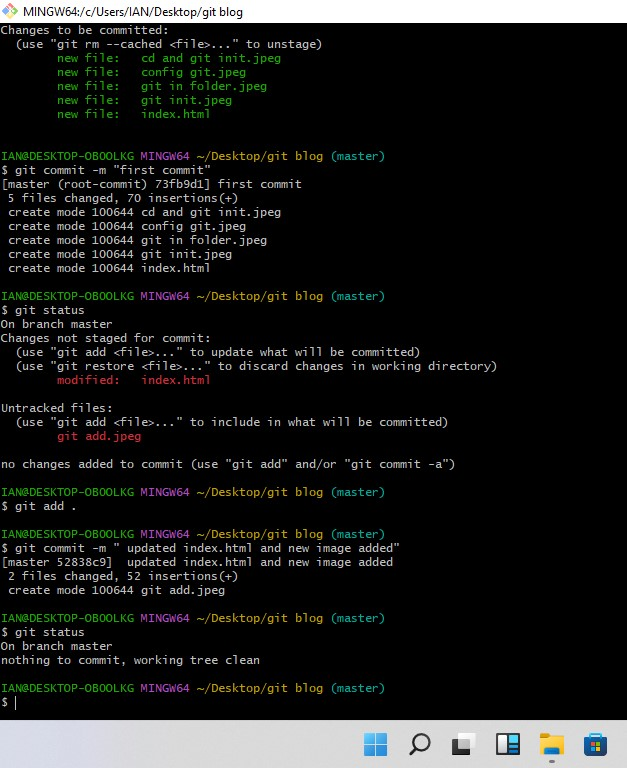

Git is a distributed version control system used for tracking changes in source code during software development.
It provides a structured and organized way to manage codebases, track changes, collaborate with others, and
maintain the integrity of projects over time. there are other version control system like git such as:
Sit back and enjoy as I take you through Git and Github
Before we move to the next step, you need to Download and install Git on your machine.
You can check if it
is installed by going to your command prompt and writing git -v
To download and install Git,
begin by visiting the Git website at https://git-scm.com/.
On the
website, locate the
prominent download button
and click on it to initiate the download of the Git installer tailored to your operating system. Once the
download completes, navigate to the downloaded installer file and double-click on it to launch the installation
process. Follow the prompts provided by the installation wizard, which may include options to customize the
installation according to your preferences. Generally, the default settings should suffice for most users. After
completing the installation, open a terminal or command prompt and type git --version to verify
that
Git was
installed correctly. This command will display the installed version of Git, confirming the successful
installation. With Git now installed on your computer, you're all set to begin using it for version control and
managing your projects' source code.
Configuring Git involves setting up your identity (name and email), configuring your editor preferences, and possibly other settings like default branch names and aliases.

A Git repository is essentially a storage location where Git keeps all the metadata and objects that represent the history and content of a project. It serves as the central hub for tracking changes to files, recording their history, and enabling collaboration among multiple developers.
Open a terminal or command prompt and change to the directory where your project files are located. You can use the cd command to navigate to the directory.
Once you're in the project directory, use the following command to initialize a Git repository Git init as shown in the screenshot below:

This command initializes an empty Git repository in the current directory, creating a hidden .git directory that contains all of Git's metadata and configuration files.

After initializing the repository, you can start adding your project files to it. You can do this using the git add command followed by the names of the files you want to add.
But before we add, we need to make sure that the files to be added are correct by using the git statuscommand as shown in the screenshot below:

the staging area in Git allows you to prepare and organize changes before committing them to the repository, providing granular control over the versioning process and ensuring that only the desired modifications are included in each commit. It's a powerful feature that helps maintain a clean and organized project history.
tracked files are those that Git actively monitors and includes in the project's version history, while untracked files are not yet part of the repository's history and require explicit action (such as git add)
Once you've added your files, you can make your first commit to the repository using the git commit command. This command records a snapshot of the current state of your project files in the repository's history. You'll also need to provide a commit message to describe the changes you're committing.
Writing good commit messages is essential for maintaining a clear and informative project history. Here are some best practices for crafting effective commit messages:
To view past commits in a Git repository, you can use the git log command.
To go back to a particular commit in Git, you can use the git checkout along with the commit hash or a reference to the commit (such as a branch name or a tag).
below is a screenshot of how to go about it

In Git, branches are parallel lines of development that allow multiple changes to be worked on simultaneously without interfering with each other. Each branch represents an independent line of development, with its own set of commits and version history. Here's why branches are important:
Creating a branch in Git is a straightforward process. Here's how to do it:

you can use the git branch command without any arguments. This command lists all branches in the repository, with an asterisk (*) next to the current branch as shown below :

If you want to switch to the newly created branch immediately, you can use the git checkout command followed by the branch name as shown below:

To merge branches in Git using a command, you can use the git merge command. Here's how:

To delete a branch in Git, you can use thegit branch command with the -d or -D option, followed by the name of the branch you want to delete. Here's how:

Once you're comfortable with branching and merging in Git, the next step is to explore how Git works with remote repositories, like GitHub or GitLab. These platforms let you store your code online and collaborate with others. You'll want to learn how to share your changes with others by pushing them to a remote repository and how to bring in changes from others by pulling them. It's also helpful to understand how to use features like pull requests for reviewing code before it's merged. Additionally, you can dive into different workflow strategies and learn about tools like hooks, which automate tasks, or Git LFS, which helps with large files. By learning these concepts, you'll become more proficient in managing your code and collaborating effectively with others.